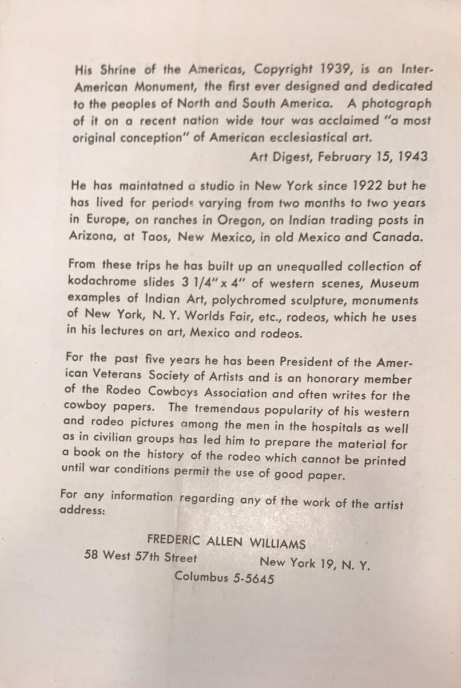

[Brochure page: the Shrine of the Americas and Williams's Kodachrome slide collection]


States that the Shrine of the Americas was copyrighted in 1939, that Williams had kept a studio in New York since 1922, and that he had built a collection of 3¼ × 4 inch Kodachrome slides of western scenes.